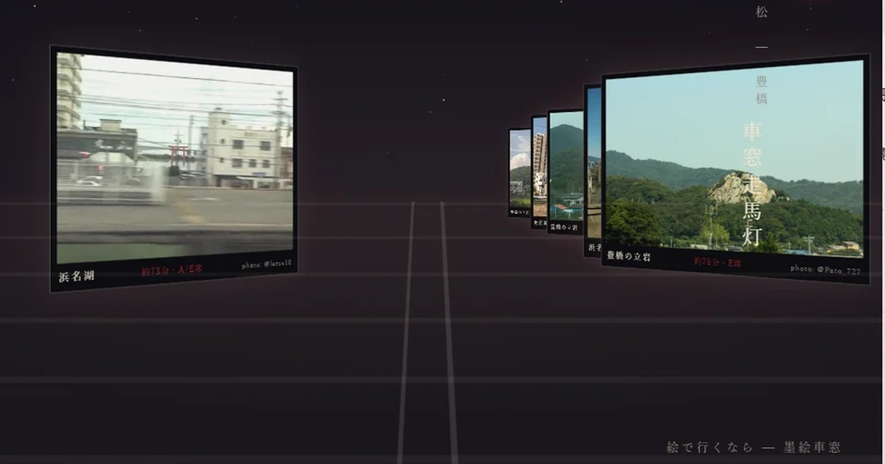
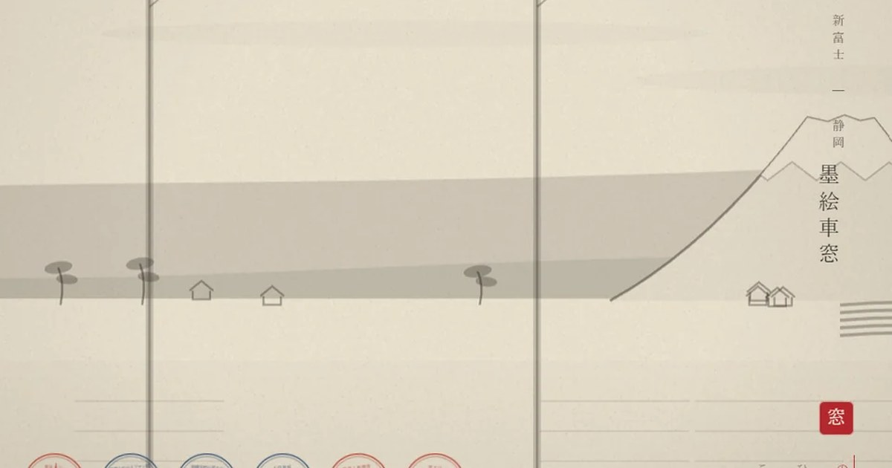

WINDOW ARTWORKS
流れていく景色を、別のかたちで。
写真で旅をめぐったり、墨絵の線を眺めたり。車窓から生まれた、ふたつの作品を集めました。

写真でめぐる旅
実際の車窓写真が、走馬灯のように流れていく。東京から新大阪までの景色を、短い旅として眺めます。

墨絵で眺める車窓
東海道新幹線の景色を、静かな墨絵で。流れる線や山のかたちを、写真とは違う表現で楽しみます。
乗車中の案内とは別に、車窓の表現を楽しむためのページです。